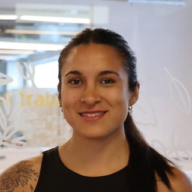

Ayudamos a las organizaciones a entender, ordenar y transferir el valor que construyeron.
Somos una consultora en sistemas de información. Combinamos arquitectura empresarial, gestión del conocimiento y evaluación de tecnología para que cada decisión se apoye en un diagnóstico riguroso y en un plan que la empresa pueda llevar adelante.
Nuestro propósito
Que el valor de una organización no dependa de quienes la sostienen hoy, sino de cómo está organizada.
Muchas empresas funcionan bien gracias al conocimiento y al esfuerzo de pocas personas. Nuestro trabajo es convertir ese conocimiento en procesos, información y sistemas que la empresa pueda sostener, mejorar y, llegado el momento, transferir.
Desafíos que abordamos
Trabajamos con pymes y empresas familiares en momentos de cambio: crecimiento, modernización, sucesión o venta. Estas son las situaciones que más nos consultan.
-
El conocimiento está concentrado en pocas personas
Procesos que nadie escribió y que se pierden si quien los conoce se va, se jubila o vende su parte.
-
Los sistemas no acompañan la operación
Áreas enteras del negocio que todavía se gestionan con papel, planillas sueltas o mensajes.
-
La información no alcanza para decidir
Datos dispersos o duplicados, sin indicadores confiables de costos, ventas o rentabilidad.
-
Se acerca una venta, una sucesión o un cambio de dueño
La empresa necesita mostrarse ordenada, documentada y capaz de funcionar sin sus fundadores.
-
Hay que elegir tecnología sin capacidad técnica propia
Muchas opciones en el mercado, poco tiempo para evaluarlas y el riesgo de invertir en la herramienta equivocada.
-
Se quiere innovar, pero no se sabe por dónde empezar
Interés en canales digitales o inteligencia artificial, sin un criterio para separar lo útil de lo que está de moda.
Servicios
Cada servicio puede contratarse por separado o como parte de un proyecto integral. En todos los casos, el resultado es un entregable concreto que queda en manos de la empresa.
-
Diagnóstico organizacional y de sistemas
Relevamos cómo funciona la empresa en sus cuatro dominios: negocio, datos, aplicaciones y tecnología. Entrevistamos a la dirección y a las personas clave, medimos la madurez de cada área y detectamos dónde se pierde tiempo, información o valor.
Qué entregamos
- Caso de negocio y objetivos estratégicos
- Mapa de procesos y cobertura de sistemas
- Evaluación de madurez por área
- Hallazgos priorizados
-
Arquitectura empresarial y hoja de ruta
Diseñamos la organización a la que se quiere llegar y la comparamos con la actual. Expresamos las brechas como capacidades, no como productos, y evaluamos escenarios de implementación hasta definir un camino realista para el tamaño y los recursos de la empresa.
Qué entregamos
- Visión de arquitectura destino
- Análisis de brechas por capacidad
- Evaluación ponderada de escenarios
- Hoja de ruta secuenciada
-
Selección de soluciones tecnológicas
Acompañamos la elección de software con un proceso transparente: definimos criterios ponderados, relevamos el mercado, construimos una matriz de requerimientos (RFP) y comparamos proveedores por cumplimiento, costo total y condiciones comerciales.
Qué entregamos
- Criterios de evaluación ponderados
- Relevamiento y preselección de proveedores
- Matriz RFP y comparación de cumplimiento
- Evaluación económica y recomendación
-
Preparación para la venta o la sucesión
Ayudamos a que la empresa sea transferible. Documentamos procesos, centralizamos el conocimiento y ordenamos la información que un comprador o un sucesor va a pedir, para que el valor de la empresa se pueda demostrar y no solo contar.
Qué entregamos
- Procesos clave documentados
- Repositorio centralizado de conocimiento
- Fichas técnicas y registros al día
- Base para la carpeta de venta
-
Innovación con inteligencia artificial
Identificamos dónde la inteligencia artificial generativa puede aportar valor real al negocio, diseñamos la solución y la validamos antes de invertir. Priorizamos tecnologías maduras y adecuadas a la escala de cada empresa.
Qué entregamos
- Mapa de oportunidades de innovación
- Diseño de la solución propuesta
- Prueba y validación con usuarios
-
Plan de implementación y acompañamiento
Convertimos la recomendación en un plan ejecutable: qué se hace primero, quién es responsable, cómo se capacita al equipo y cómo se mide el avance. La empresa implementa y nosotros acompañamos los ajustes.
Qué entregamos
- Plan de implementación con responsables
- Plan de capacitación y gestión del cambio
- Indicadores de seguimiento
Cómo trabajamos
Seguimos una metodología en cinco fases. Cada una termina con un entregable que validamos con la persona responsable del proyecto en la empresa antes de avanzar a la siguiente.
-
Entender
Conocemos el negocio, sus objetivos y a las personas que lo llevan adelante.
-
Diagnosticar
Relevamos la arquitectura actual y medimos la madurez de cada área.
-
Diseñar
Definimos el destino, las brechas y el escenario de implementación más conveniente.
-
Recomendar
Evaluamos soluciones con criterios explícitos y proponemos la más adecuada.
-
Acompañar
Planificamos la implementación y seguimos el avance junto a la empresa.
Marcos de referencia
Nos apoyamos en metodologías reconocidas y las adaptamos a la escala de cada cliente.
- Arquitectura empresarial (TOGAF)Análisis por dominios y bloques de capacidades.
- Diez tipos de innovación (Doblin)Para pensar el modelo de negocio futuro.
- Hype Cycle de GartnerPara elegir tecnologías con madurez probada.
- Matriz RFP ponderadaPara comparar proveedores con evidencia.
- ScrumPara organizar el trabajo en entregas cortas y validadas.
Lo que guía nuestro trabajo
Cuatro principios que aplicamos en cada proyecto, desde la primera entrevista hasta la recomendación final.
-
Primero el negocio, después la tecnología
Partimos de los objetivos de la empresa. Una herramienta solo tiene sentido si resuelve un problema concreto.
-
Soluciones a la medida de cada organización
Recomendamos lo que la empresa puede adoptar y sostener con sus recursos actuales, no lo más sofisticado del mercado.
-
Decisiones con criterio explícito
Cada recomendación se apoya en criterios ponderados y evidencia verificable, para que el cliente entienda por qué la elegimos.
-
Capacidad que queda en la empresa
Nuestro trabajo termina bien cuando la organización puede continuar sin nosotros.
Quiénes somos
Cauce es un equipo de consultores en sistemas de información de las organizaciones. Nos especializamos en entender cómo funciona cada empresa por dentro: cómo circula la información, cómo se toman las decisiones y qué tan preparada está para crecer o cambiar de manos.
Nuestro nombre resume la forma en que trabajamos. Un cauce no cambia el agua: le da dirección. Eso buscamos con cada cliente, ordenar lo que ya tiene para que pueda avanzar.
-
Misión
Acompañar a pymes y empresas familiares en sus decisiones sobre procesos, información y tecnología, con diagnósticos rigurosos y propuestas que puedan implementar.
-
Visión
Ser la consultora de referencia para las organizaciones que necesitan ordenarse antes de dar un paso importante: crecer, modernizarse o cambiar de dueño.
-
Valores
Rigor en el análisis, honestidad en las recomendaciones, cercanía con el cliente y compromiso con resultados que perduren.
El equipo
Trabajamos con Scrum. La Product Owner representa los objetivos del cliente y prioriza el trabajo, la Scrum Master organiza el proceso y el resto del equipo desarrolla los entregables de cada etapa.
- Paloma SteinbergProduct Owner
- Camila BlancoScrum Master

Camila AlbornozConsultora- Matías FretesConsultor
- Juliana GonzálezConsultora
- Luis SantallaConsultor
Caso destacado: Orann
Una empresa familiar de alimentos saludables, con más de 30 años de historia, que se prepara para que sus fundadores puedan retirarse y venderla.
-
El desafío
Los dueños quieren vender la empresa en dos a tres años, pero buena parte de su funcionamiento depende de lo que ellos saben y no está documentado.
-
Nuestro enfoque
Analizamos su arquitectura empresarial, definimos la organización destino y evaluamos cuatro escenarios. Elegimos una implementación SaaS modular, empezando por la gestión documental.
-
El avance
Completamos las primeras cinco etapas y estamos comparando dos soluciones con una matriz RFP de más de cien ítems. La recomendación final se presenta en diciembre de 2026.